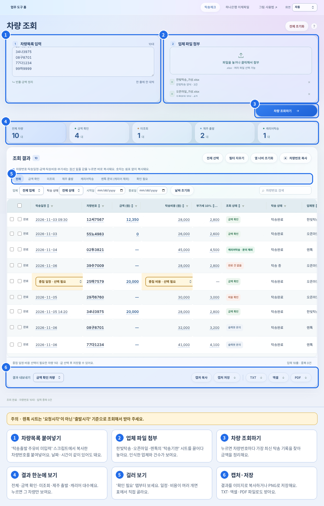

1. 실제 업무 순서대로 시작하기
먼저 필요한 원본은 두 가지예요. ① ‘탁송출발 주유비 미입력’ 스크립트에서 추출한 차량번호 목록, ② 탁송 3사의 ‘탁송기한’ 조회에서 다운로드한 시트예요.
‘탁송출발 주유비 미입력’ 스크립트
- 사내 업무 시스템에서 탁송출발 주유비 미입력 스크립트를 실행해요.
- 조회 결과에서 필요한 차량번호를 추출하고 복사해요.
- WorkTool의 차량목록 입력에 붙여넣어요. 날짜·시간이 함께 복사된 경우 그대로 입력할 수 있어요.
준비 완료: 차량번호 목록이 WorkTool 왼쪽 입력칸에 표시돼요.
탁송 3사 ‘탁송기한’ 조회
- 한빛탁송 · 오픈마일 · 렌톡 각 업체의 조회 화면에서 탁송기한을 조회해요.
- 확인할 기간을 설정하고 조회 → 시트 다운로드를 진행해요.
- 다운로드한 3개 업체 시트(.xlsx)를 WorkTool의 업체 파일 첨부 영역에 넣어요.
- 첨부 후 파일명, 업체 인식 여부, 기록 건수를 확인해요.
준비 완료: 조회 대상 기간에 해당하는 3사 시트가 첨부되어 있어요.
렌톡은 시트를 다운로드하기 전에 조회 기준을 ‘요청시각’ → ‘출발시각’으로 바꾸고 기간을 설정하세요. 세 업체의 시트 기간이 조회할 차량의 운행일과 맞는지도 확인해 주세요.
3. WorkTool에서 조회·확인
- 차량목록과 업체파일이 모두 준비되면 차량 조회하기를 눌러요. 첨부·입력이 바뀌었다면 다시 조회해요.
- 확인 필요 탭에서 미조회·완료 건 없음·비용 확인·일정 선택이 남은 차량을 먼저 확인해요.
- 필요한 차량번호를 복사하거나 저장 범위를 골라 TXT·엑셀·PDF로 저장해요.

2. 차량목록 입력
원본 출처: 사내 ‘탁송출발 주유비 미입력’ 스크립트에서 차량번호를 추출해 복사한 목록이에요. 차량목록 입력 칸에 그대로 붙여넣어요.
한 줄에 한 대씩 넣어요. 날짜·시간이 함께 있는 목록도 그대로 붙여넣을 수 있어요.
2026-11-03 10:00 123가4567 2026-11-03 11:30 45나6789
차량번호만 넣어도 돼요.
123가4567 45나6789
- 입력칸 오른쪽 위에 인식한 대수가 보여요. 읽지 못한 줄이나 중복이 있으면 아래에 알려 줘요.
- ↳ 빈줄·공백 정리를 누르면 인식한 목록만 깔끔하게 정리해요. 읽지 못한 줄이 있으면 먼저 고쳐 달라고 안내해요.
- 조회는 차량번호로만 맞춰요. 함께 넣은 날짜·시간은 표시용이고 조회 기준이 아니에요.
- 같은 차량번호를 두 번 넣으면 '입력 중복'으로 표시하고, 복사·저장할 때는 한 번만 넣어요.
3. 업체 파일 첨부
원본 출처: 한빛탁송·오픈마일·렌톡에서 각각 탁송기한 조회 → 기간 설정 → 조회 → 시트 다운로드로 받은 엑셀 파일이에요.
렌톡은 기간 설정 기준을 ‘요청시각’에서 ‘출발시각’으로 바꾼 뒤 기간을 정하고 다운로드하세요.
- 파일을 놓거나 클릭해서 첨부 영역을 누르거나 파일을 끌어다 놓아요. 여러 파일을 한 번에 넣을 수 있어요.
- 암호가 걸린 파일은 열기 암호를 물어봐요. 암호는 파일을 읽을 때만 쓰고 저장하지 않아요.
- 첨부 목록에서 파일명, 인식한 업체 양식, 기록 건수를 확인해요. 잘못 넣은 파일은 옆의 ×로 빼요.
| 업체 | 주유금액 | 탁송일정 | 탁송비용 |
|---|---|---|---|
| 한빛탁송 (A) | 주유/부대비용 총액 · 빈칸은 0원 | K열 + L열 | AP열 |
| 오픈마일 (B) | 주유비 · 빈칸은 미입력, 숫자 0은 주유비 없음 | C열 | U열 |
| 렌톡 (C) | 금액 없음 → 슬랙봇 문의 목록 | D열 | S열 |
렌톡 J열이 Y면 캐리어탁송, N이면 일반탁송, 비어 있으면 '확인 필요'로 봐요.
지원 형식은 .xlsx, 한 파일 최대 40MB, 한 시트 최대 100,000행이에요. 업체는 제목 줄의 항목 이름을 보고 자동으로 알아봐요.
4. 조회 기준
차량 조회하기를 누르면 차량목록의 차량번호를 3사 기록 전체에서 찾아요.
- 같은 차량번호의 기록이 여러 개면 업체와 상관없이 탁송일자가 가장 최신인 기록 하나를 써요. 날짜가 같으면 나중에 첨부한 파일·아래쪽 줄을 우선해요.
- 그 기록이 탁송완료일 때만 금액을 확정해요.
- 주유금액은 10원 단위로 반올림해요. 예: 12,345원 → 12,350원. 0원도 유효한 금액이에요.
- 탁송비용 부가세는 비용의 10%를 원 단위로 반올림해요.
- 원본 파일은 바꾸지 않아요. 입력이나 파일을 바꾸면 결과가 지워지니 다시 조회해 주세요.
| 상태 | 뜻 |
|---|---|
| 금액 확인 | 한빛·오픈마일 완료 기록에 금액이 있어요. |
| 미조회 | 첨부한 파일 어디에도 그 차량번호가 없어요. 빠진 업체 파일이 없는지 확인해 주세요. |
| 완료 건 없음 | 기록은 있지만 탁송완료가 아니에요(탁송 중·배정완료·취소 등). |
| 비용 확인 | 완료 기록인데 주유비가 비어 있거나(오픈마일) 숫자가 아니에요. |
| 슬랙봇 문의 | 렌톡 완료 건이에요. 금액이 없어서 따로 문의해야 해요. |
| 캐리어탁송 · 문의 제외 | 렌톡 J열 Y인 완료 건이에요. 문의 목록에서 빠져요. |
탁송일정·탁송비용이 여러 개일 때
같은 차량의 기록끼리 탁송일정이나 탁송비용이 서로 다르면 그 칸에 중첩 일정 · 선택 필요 드롭다운이 나타나요. 값 옆에 업체·파일·줄 위치·탁송 상태가 함께 보이니 맞는 건을 골라 주세요.
- 탁송일정을 고르면 같은 원본 건의 탁송비용도 자동으로 따라가요.
- 고른 칸에는 값과 업체가 표시되고, 변경을 눌러 다시 고를 수 있어요.
- 고르지 않은 차량이 있으면 저장할 때 먼저 골라 달라고 안내해요. 임의로 하나를 골라 저장하지 않아요.
5. 결과 보기·걸러 보기
위쪽 카드에서 전체 차량·금액 확인·미조회·제주 출발·캐리어탁송 대수를 보고, 카드를 누르면 그 목록만 볼 수 있어요. 결과 표 위 탭도 같은 역할을 해요.
| 탭 | 보이는 차량 |
|---|---|
| 전체 | 조회한 모든 차량 |
| 금액 확인 | 금액이 확정된 차량 |
| 미조회 | 기록을 못 찾은 차량 |
| 제주 출발 | 렌톡 기록의 출발지가 제주인 차량 (완료 여부와 상관없음) |
| 캐리어탁송 | 렌톡 J열 Y인 차량 |
| 렌톡 문의 (캐리어 제외) | 슬랙봇에 문의할 렌톡 완료 차량 |
| 확인 필요 | 금액 확인·캐리어가 아닌 차량, 입력 중복, 캐리어 여부 확인 필요, 일정·비용 선택이 남은 차량 |
- 업체·탁송 상태 드롭다운, 시작일·종료일(탁송일정 기준), 차량번호 검색으로 더 좁힐 수 있어요. 날짜 초기화로 기간을 지워요.
- 열 머리글을 누르면 정렬하고, ▼를 누르면 그 열에 들어간 글자로 걸러 봐요. 필터 지우기로 되돌려요.
- 머리글 경계를 끌어 열 너비를 바꿀 수 있어요. 너비는 이 기기에 기억하고, 열 너비 초기화로 되돌려요.
- 줄에 마우스를 올리면 원본 위치(파일 / 시트 / 행)가 보여요.
- 화면에는 처음 2,000줄까지 보여요. 복사·저장에는 조건에 맞는 차량이 모두 들어가요.
6. 복사·캡처·저장
복사
- 차량번호 복사: 지금 보이는 목록의 차량번호를 한 줄에 하나씩 복사해요. 중복은 한 번만 들어가요.
- 렌톡 문의 (캐리어 제외) 탭에서 복사하면 [제주도출발차량]과 [일반차량] 제목 아래로 나눠서 복사해요.
- 점선 밑줄이 있는 값은 누르면 바로 복사돼요. 차량번호·탁송일정·주유금액·탁송비용·부가세가 해당돼요. 마우스를 올리면 '복사' 표시가 나타나고, 숫자는 쉼표 없이 복사돼요(예: 12,350 → 12350). 키보드로는 Tab으로 칸을 고른 뒤 Enter를 눌러요.
- 왼쪽 체크박스로 줄을 고르면 복사·저장이 고른 줄만 대상으로 해요. 전체 선택은 지금 보이는 줄을 모두 골라요.
작업 표시
복사한 차량 줄은 파란색(복사함), 줄의 완료를 체크하면 초록색(체크 완료)으로 바뀌어요. 업무 정리용 표시라 업체 기록은 바꾸지 않고, 전체 초기화·새로고침하면 지워져요.
결과 캡처
조회 결과를 표 이미지로 만들어요. 제목·저장 범위·차량 대수·시각, 차량별 탁송일정·차량번호·주유금액·탁송비용·부가세·조회 상태·업체, 맨 아래 합계가 들어가요.
- 캡처 복사: 이미지를 클립보드에 복사해요. Slack이나 메신저에 바로 붙여넣으면 돼요. 브라우저가 이미지 복사를 막으면 PNG 파일로 대신 저장해요.
- 캡처 저장:
탁송조회_캡처_날짜_시각.png파일로 저장해요. - 캡처 범위는 파일 저장과 같아요. 아래 저장 범위를 따르고, 체크한 줄이 있으면 체크한 줄만 담아요.
- 일정·비용을 아직 고르지 않은 칸은 '선택 필요'로 표시돼요. 이미지 한 장에는 300대까지 담을 수 있어요.
파일로 저장
- 아래 결과 내보내기에서 저장 범위를 골라요: 금액 확인 차량(기본) · 현재 표시 목록 · 전체 조회 결과. 체크한 줄이 있으면 체크한 줄만 저장해요.
- TXT · 엑셀 · PDF 중 하나를 눌러요. 파일 이름은
탁송조회_날짜_시각.확장자예요.
TXT·엑셀에는 탁송일정, 차량번호, 주유금액, 탁송비용, 부가세, 비용 구분, 조회 상태, 입력 일시, 업체, 탁송 구분, 출발지, 메모, 원본 위치가 들어가요. PDF에는 탁송일정·차량번호·주유·탁송비·부가세·조회 상태가 들어가요. 차량번호 중복은 빼고 저장해요.
7. 초기화·데이터 보관
- 전체 초기화: 차량목록, 첨부 파일, 결과, 복사·완료 표시를 모두 비워요. 확인 창이 한 번 떠요.
- 파일과 입력 내용은 서버로 보내지 않고 이 브라우저 안에서만 처리해요. 저장하지 않아서 새로고침하면 지워져요.
- 열 너비와 화면 모드만 이 기기에 기억해요. 저장한 결과 파일은 기기에 남아요.
8. 자주 묻는 질문
미조회가 많아요.
빠진 업체 파일이 없는지, 시트 기간이 차량 운행일을 덮는지 확인해 주세요. 렌톡은 '출발시각' 기준으로 받았는지도 확인해 주세요.
파일을 읽지 못했어요.
.xlsx 형식인지, 40MB 이하인지, 열기 암호가 맞는지 확인해 주세요. 엑셀에서 정상적으로 열리는지, 업체 원본의 제목 줄 항목 이름이 그대로인지도 확인해 주세요.
날짜를 넣었는데 다른 날 기록이 나와요.
조회는 차량번호로만 맞추고, 같은 차량의 기록 중 탁송일자가 가장 최신인 건을 써요. 입력한 날짜는 표시용이에요.
저장하려니 일정·탁송비용을 먼저 고르래요.
같은 차량의 기록끼리 일정이나 비용이 달라서 그래요. 확인 필요 탭에서 '선택 필요' 드롭다운이 있는 줄을 찾아 골라 주세요.
복사나 저장이 안 돼요.
브라우저의 클립보드 권한과 다운로드 차단 여부를 확인해 주세요. 최신 Chrome·Edge·Safari를 써 주세요.